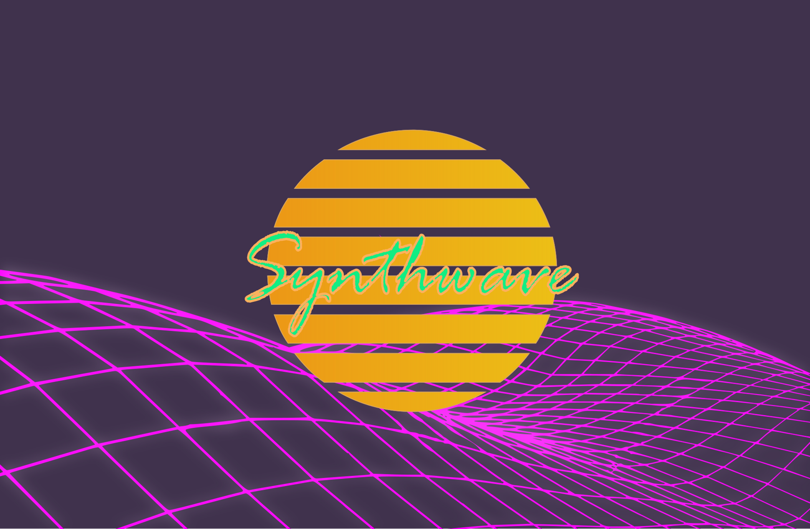

References / Illustration / 552
Synthwave banner (j4p4n, Openclipart)
A public-domain vector banner: a striped orange sun, a glowing magenta wireframe landscape, and the word “Synthwave” in green brush script on a flat dark violet ground.
- Source
- Openclipart: Synthwave by j4p4n
- Creator
- j4p4n
- Made
- 2018-05-10 (date given on Commons)
- Style
- Synthwave (agent-proposed, not yet reviewed by a person)
- Moods
- Nostalgic, nocturnal, retrofuturist
- Evidence
- Inspected a 1920 × 1255 PNG rendering of the SVG through Wikimedia Commons and stored a reduced copy. A later CC0 edit by another user, Synthwave Edit creative commons test.jpg (2024), reuses this sun and grid and adds laser beams. It has no separate record.
- Reviewed
- Rights
- Open license, stored. License: CC0-1.0. Rights policy


Context
The Commons description reads: “Synthwave is a kind of 1980s inspired dance retrofuturistic pop synth music. It appeals to a sort of nostalgia for music of the past. This ‘banner’ was inspired by that and the aesthetic of the genre.” Wikimedia Commons.
The file came from Openclipart, which publishes all its clip art in the public domain. Commons marks it with the PD-OpenClipart template. Wikimedia Commons.
Observed
- The ground is a flat, dark grayish violet with no gradient and no stars.
- A large sun disc in the centre shades from orange at the left to yellow at the right. Eight horizontal violet gaps cut it into bands from top to bottom.
- The word “Synthwave” crosses the sun in a bright green brush script with a thin orange outline.
- A magenta wireframe mesh fills the lower half. It rises like a wave from the left, dips behind the sun, and tightens into small cells at the right. The lines have a soft magenta glow.
Why it belongs
A plain, flat statement of the motif set: sun, grid, and script. The muted violet ground is lighter than the black night of the rubric, and there is no chrome lettering, so it shows the minimum that still reads as synthwave.
Borrow
Cut evenly spaced horizontal bars through the whole sun disc and run a one-word script logotype across its middle.
Add a soft outer glow to thin magenta grid lines so that a flat vector reads as neon.
Measured
Machine-extracted by tools/image-traits.py on . Full measurement.
- Mean chroma
- 0.24
- Palette
- #40324d 69%
- #edaf17 9%
- #4f3e5a 5%
- #f61af6 2%
- #ab29b0 2%
- #c227c4 2%
- #982d9f 2%
- #613a6c 2%

